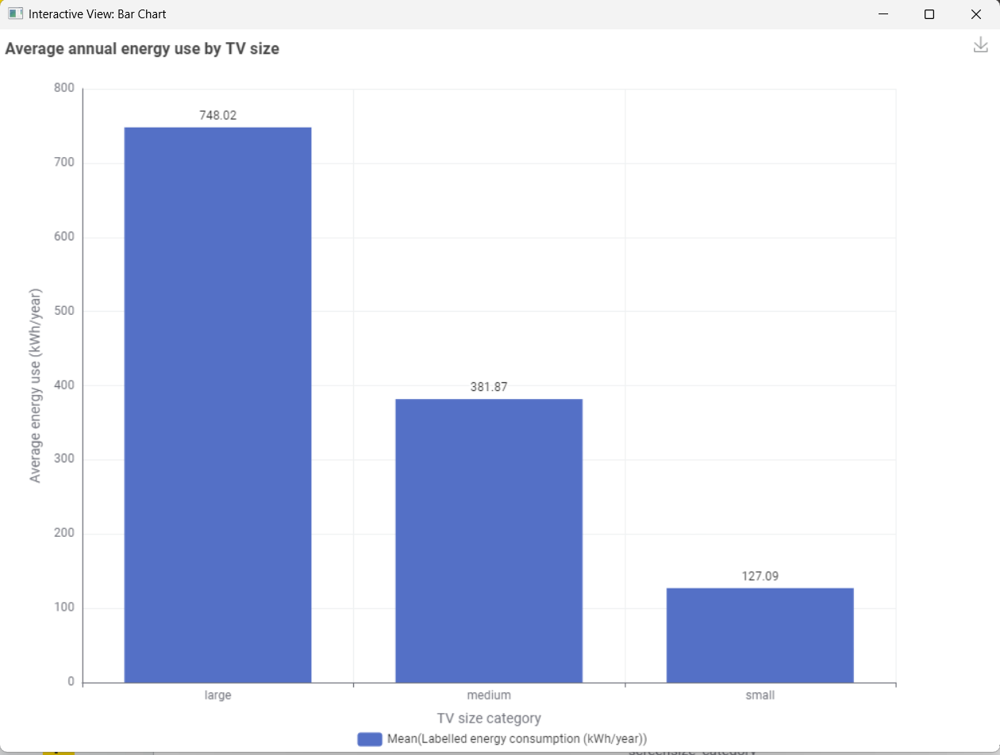
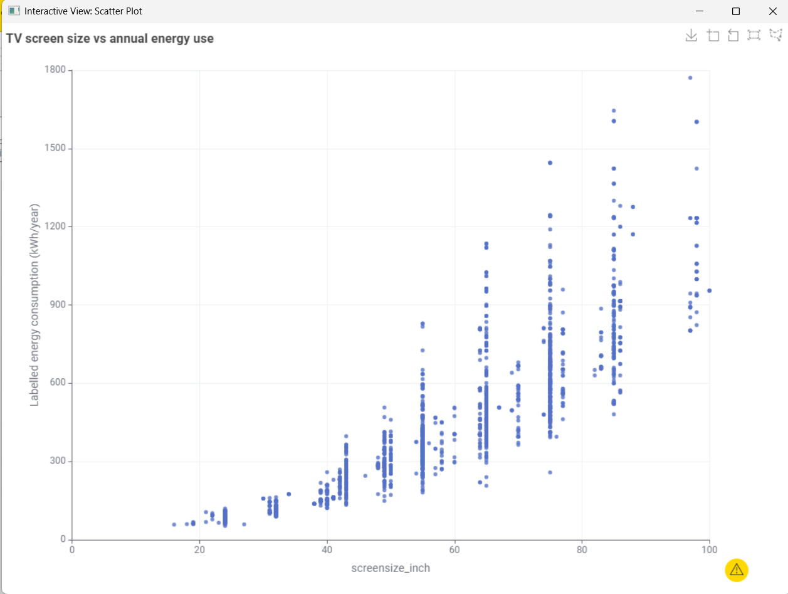

The average rises with screen size
In the cleaned dataset, average labelled annual energy use was 748.02 kWh for large TVs, 381.87 kWh for medium TVs and 127.09 kWh for small TVs. The average is higher in each larger screen-size group.

What this means for shoppers: choosing a smaller screen is associated with lower labelled annual use in this set of products. Compare the kWh/year figure on the specific TV label before deciding.
Screen size is a strong clue, not the whole answer
A scatterplot can show the relationship across individual TVs. It also makes the variation between models of similar sizes easier to see. Technology and model design matter too.

How to read the annual figure
The kWh/year figure is an estimate based on standard usage assumptions. The Australian Government says TV label calculations assume 10 hours of use and 14 hours in standby per day. Your actual use depends on viewing time, settings and the electricity tariff on your bill.
About the data
The dataset was provided with the course materials and cleaned in KNIME. It began with 4,724 records. After duplicate records were removed, 4,468 entries remained. Screen sizes were converted from centimetres to inches and assigned to the small, medium and large groups shown above.
This is a snapshot of listed products, so it may not include every model currently available. The results describe an association across the products in this dataset; they do not guarantee the energy use of an individual television or reflect how every household uses one.